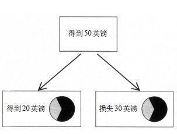

情感的框架效应很难抵挡
阿莫斯和我将框架效应运用到了研究构想对信念和偏好的不公平影响中。以下就是我们曾使用的一个例子：
若某赌注有10%的概率赢得95美元，有90%的概率损失5美元，你会接受这个赌注吗？
若某彩票有10%的概率赢得100美元，有90%的概率什么也得不到，你愿意花5美元买这张彩票吗？
首次，要花点时间弄明白这两个问题是相同的。在这两个问题中，你都要决定是否愿意接受某一不确定的可能，即拿到95美元或损失5美元。有人作选择会基于理性，他们会给出两个相同的答案，但这样的人是少数。事实上，其中有一个问题引起了很多正面的答复，这个问题是第二个。一个不好的结果如果被架构为不会赢的彩票的成本，比被简单地描述成输掉一个赌注更易被接受。我们对以下这个说法不应该感到惊讶：损失能比成本引起更强烈的负面感觉。选择不是基于现实的，因为系统1就不是基于现实的。
从理查德·泰勒那儿学到的东西影响了我们构建的问题。泰勒告诉我们当他还是个研究生时，他就在一块木板上钉一张卡片，上面写着：成本就是没有损失。他在早期研究消费行为的文章中讲了一次争辩，那次争辩是关于加油站是否可以向用现金或信用卡付款的人收取不同的价钱。用信用卡支付的人强烈坚持不同的价格是不合法的，但也有可商量的余地：只要价钱上的不同是现金折扣，而不是信用卡附加费。他们的心理信念是合理的：相对于附加费来说，人们更容易放弃折扣。附加费和折扣也许在钱数上来看是相等的，但它们在情感上是不等的。
在某项实验中，伦敦大学的一组神经科学家将框架效应的研究和大脑不同位置的活动记录相联系。为了得到大脑反应的可靠测量值，实验作了很多次的尝试。图14表明了其中一次尝试的两个阶段。

图14
第一，要求受试者想象自己收到了一笔钱，在此例子中是50英镑。
然后要求受试者在肯定的结果和在轮盘赌中作出选择。如果轮盘指针停在了白色区域，她就会“得到”全部的钱；如果指针停在黑色区域，她就什么也得不到了。赌博的预期值当然是确定的结果，在这个例子中就是得到20英镑。
正如图14所显示的那样，同样的确定结果可以被构架成两种不同的方式：即得到20英镑或损失30英镑。客观的结果在两个框架下完全相同，而且基于现实的经济人会以相同的方式对这两个结果做出反应（不管框架的限制，只是选择确定的事情或赌一把），但我们已经知道人类大脑不会受限于现实。是接近还是逃避是经由文字引起的，而且当获得是确定的时候，系统1便会偏向于获得；若损失是确定的时候，系统1便又会规避损失。
实验人员作了很多尝试，而且每位受试者都需要在获得和损失的框架内解决几个选择问题。正如所预期的那样，20位受试者都表现出了框架效应：在获得的框架下，他们更愿意选择确定的事；在损失框架下，他们更愿意选择赌一把。但是，受试者不都是这个样子的。有些人易受到问题框架的影响；而有些人不管框架，但他们作出的选择几乎和基于现实的人作出的选择一样。实验者相应地对20位受试者进行排序，并给这个排序一个惊人的标签：合理指数。
受试者做每个决策时，大脑活动都被记录了下来。然后，所作的尝试被分为两组：
1.受试者的选择遵从框架的尝试。
·在获得时，偏向确定的事
·在损失时，偏向赌一把
2.受试者的选择不遵从框架的尝试
惊人的结果让人们看到了神经经济学这一新兴学科的潜质，即研究在人们做决策时的大脑活动。神经经济学学家做了上千种这样的实验，而且他们了解到：大脑特定区域的“活跃”（表明氧气需求量增大，即神经活动加强）取决于任务本身。在个人专心于某一视觉对象、在幻想中踢足球、识别一张脸或思考一所房子时，大脑的不同区域会变得活跃。当个人有某种情感共鸣、情感冲突或注意力集中于解决某个难题时，大脑的其他区域会变得活跃。尽管神经科学家出于谨慎，没有使用“大脑的这种模式会……”这种说法，但他们对于不同大脑区域的“个性”已经很了解了，而且知道大脑活动对心理解释的分析已经大有进展。对框架的研究产生了三个主要的发现：
·在受试者的选择和框架相一致时，与情绪激发相联系的大脑区域（大脑扁桃体）会很活跃。这正是可引发情绪反应的词，如获得或损失产生趋向于确定事件（当该确定事件被构架成获得时）或避免确定事件（当该确定事件被构架成损失时）的动力时我们所预测的那样。因为情绪刺激词的缘故，大脑扁桃体可被快速访问—这点很可疑，很有可能是因为系统1的参与。
·在受试者没有顺从自己的意识时（即他们在已知确定的事是损失时，依然选择确定的事），和矛盾以及自我控制相联系的大脑区域（前扣带）会更活跃。拒绝系统1参与其中，显然会产生矛盾。
·最“理性的”受试者，即那些最不易受框架效应影响的人，大脑额叶区的活动会加强，该区域可将情绪和引导做出决策的理性联系起来。我可以从中明显地看出来，“理性的”个体不会都显示出强有力的神经冲突。似乎这些理性的受试者都是（经常，或不总是）基于现实做出决策的，少有冲突。
这项研究通过把对真实选择的观察和神经活动的测量联合起来，对文字如何引起情绪反应，并“泄露”出最后的选择作出了很好的说明。
阿莫斯和他的同事在哈佛医学院做的一项实验是情感框架一个经典的例子。受试者都是医生，实验者给受试者看了两种肺癌治疗结果的数据，分别是手术治疗和放射治疗。手术治疗可保证有5年的存活时间，因此，大家都愿意选择手术，但在短期内，手术要比放射治疗的风险更大。一半的受试者读到了关于存活率的数据，其他人收到了关于死亡率的相关信息。对手术短期结果的两种描述是：
第一个月的存活率是90%。
在第一个月里，有10%的死亡率。
你已经知道了结果：在第一个框架下（84%的医生选择了它），手术治疗要比在第二个框架下（50%的受试者选择放射治疗）更受欢迎。两种描述的逻辑等价很明显，而且基于现实的决策制定者会作出同样的选择，不管她看到的是哪种描述。不过，我们都知道，系统1对于引起情绪的文字很敏感，在第二个描述中，死亡率就是会引起负面情绪的词，而存活率是引发正面情绪的词；90%的存活率听上去让人心安，而10%的死亡率却让人感到恐惧。这项研究的一个重要发现是医生和对医学涉猎不深的人（比如病患和商学院的研究生）一样，也容易受到框架效应的影响。显然，医学培训也阻挡不了框架效应的出现。
“获得—损失”研究和“存活率—死亡率”的研究没有什么本质的不同。脑部造影研究中的受试者作的很多尝试时也碰到了不同的框架。他们能够认识到框架有分散注意力的作用，而且可通过采用一个共同的框架，或将“损失”转换成等量的“所得”，可使问题变得简单些。聪明的人（和机警的系统2）也需要学一学，而且有专长的几位受试者也会出现在实验者发现的“理性的”人中。相反，在存活率框架下读到关于两种治疗数据的医生没理由怀疑自己若在死亡率框架下读到相同的数据会作出不同的选择。重新构架是要付出努力的，而且系统2通常很懒惰。除非有明显的理由需要这样做外，否则，大多数人都会被动地接受在框架下的决策问题，因此很少有机会发现我们的偏好受框架约束而不是现实约束的程度。